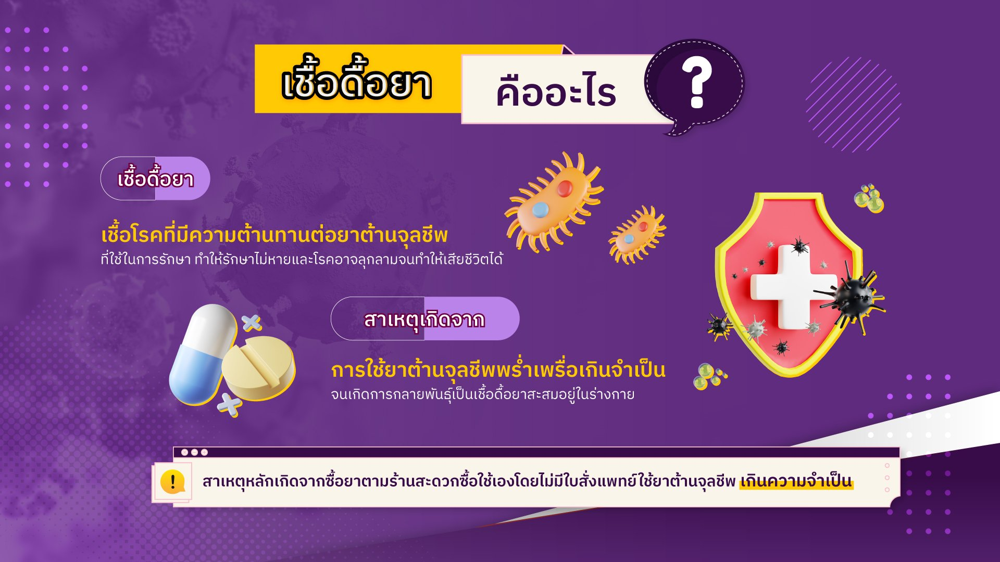

1. เชื้อดื้อยาต้านจุลชีพ
กลุ่มสารต้านจุลชีพ (Antimicrobial class)
กลุ่มของสารต้านจุลชีพที่มีโครงสร้างโมเลกุลที่สัมพันธ์กัน มักมีรูปแบบการออกฤทธิ์คล้ายกันเนื่องจากทำปฏิกริยากับเป้าหมายตำแหน่งเดียวกัน จึงมีกลไกการดื้อยาต้านจุลชีพที่คล้ายคลึงกันด้วย ความหลากหลายของคุณสมบัติของสารต้านจุลชีพภายในกลุ่มเดียวกันมักเกิดขึ้นจากการแทนที่โมเลกุล (molecular substitutions) ที่แตกต่างกัน ซึ่งทำให้มีการออกฤทธิ์หรือคุณสมบัติทางเภสัชจลนศาสตร์และเภสัชพลศาสตร์ที่แตกต่างกัน
การดื้อยาต้านจุลชีพ (Antimicrobial resistance (AMR)
ความสามารถของจุลชีพในการเพิ่มจำนวนหรือมีชีวิตอยู่ในสภาวะที่มียาต้านจุลชีพในระดับที่สูงขึ้นจากระดับที่เคยยับยั้งหรือ ฆ่าจุลชีพชนิดนั้นได้
สารต้านจุลชีพ (Antimicrobial/ Antimicrobial agent)
สารธรรมชาติ สารกึ่งสังเคราะห์หรือสารสังเคราะห์ ซึ่งเมื่อเข้าไปในร่างกายแล้วสามารถฆ่าหรือยับยั้งการเจริญของเชื้อจุลชีพได้
สิ่งแวดล้อม (Environment)
สิ่งต่างๆ ที่มีลักษณะทางกายภาพและชีวภาพที่อยู่รอบตัวมนุษย์ ซึ่งเกิดขึ้นโดยธรรมชาติและสิ่งที่มนุษย์ได้ทำขึ้น (พรบ.ส่งเสริมและรักษาคุณภาพสิ่งแวดล้อมแห่งชาติ พ.ศ. 2535
การเฝ้าระวัง (Surveillance) กระบวนการจัดเก็บ วิเคราะห์ และแปลผลข้อมูล ที่จำเพาะต่อผลลัพธ์ใดๆอย่างต่อเนื่องและมีระบบรวมถึงการนำข้อมูลที่วิเคราะห์ได้ไปเผยแพร่และใช้ประโยชน์ในด้านการวางแผน การจัดทำมาตรการป้องกันและควบคุมปัญหาสาธารณสุข รวมถึงการประเมินผลของนโยบายหรือมาตรการอย่างทันท่วงการวางแผน
1.2 ความสำคัญของเชื้อดื้อยาต้านจุลชีพ
